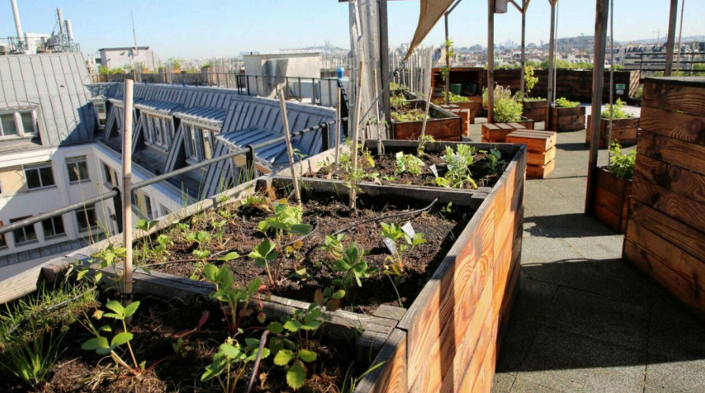

Faire pousser ces légumes en ville pour faire des économies : une fausse bonne idée
En passant de 1% à 5% en deux ans, cette année, l'inflation fait mal au portefeuille. En voyant le prix des produits alimentaires en supermarché s'envoler, certains Français ont l'idée de faire pousser leurs propres produits. Peut-on faire de vraies économies et est-ce une bonne idée avec la pollution lorsqu'on habite en ville ?
Publié le 02/05/2024 9:06  Temps de lecture : 4 min.
Temps de lecture : 4 min.

Nobuki économise environ 10€ par mois en faisant pousser ses herbes aromatiques
Les économies que l'on peut faire en faisant pousser ses propres fruits, légumes et herbes
aromatiques ne sont pas significatives lorsque l'on vit dans une grande ville. Pour cause, le
manque d'espace. Cependant, même avec un simple balcon, on peut économiser quelques
euros en faisant pousser des herbes aromatiques. C'est le cas de Nobuki qui habite au
premier étage d'un immeuble du 13ᵉ arrondissement de Paris et qui aime assaisonner ses
plats avec de la coriandre. Il a choisi d'en faire pousser sur son balcon du premier étage car
le supermarché à côté de chez lui n'en vend pas.
Il doit faire 20 minutes de trajets pour en trouver dans un autre supermarché qui en vend en
bouquet, mais voilà, il faut la consommer rapidement pour éviter qu'elle ne fane. Depuis qu'il
fait pousser de la coriandre sur son balcon, le jeune homme peut couper une branche ou
deux pour donner du goût à ses plats, tout en ayant encore du stock. Même si la coriandre
ne coûte pas si cher, quand on fait le calcule, on économise tout de même du temps et
quelques euros.
Comme Nobuki, Anna, une jeune employée de bureau à Créteil a elle aussi succombé au
charme de l'agriculture maison. Elle partage un poulailler avec ses voisins et avec deux
œufs pondus tous les deux jours, Anna fait quelques économies non significatives, mais
cela lui fait tout de même plaisir et considère ça comme une initiation et une porte ouverte
vers une autre façon de consommer.
Quid de la pollution ?
Même sans beaucoup d'espace on peut se débrouiller pour récolter quelques produits en
ville, mais quand on habite Lyon ou Paris, certaines des villes les plus polluées de France,
est-ce une bonne idée de cultiver ses propres légumes ? Selon Ophélie Damblé,
Youtubeuse pour la chaîne Ta Mère Nature et créatrice d'une pépinière à la Cité Fertile dans
le 93, les sols des villes françaises sont souvent pollués, il est donc recommandé de faire de
l'agriculture hors sol. C'est-à-dire utiliser des pots avec de la terre saine achetée dans des
magasins spécialisés.
De ce fait, les œufs d'Anna ne sont pas forcément très bons à la consommation. En effet,
selon l'Agence Régionale de la Santé d'Île-de-France, "la consommation régulière (plusieurs
fois par semaine) des œufs de poules, élevées en milieu urbain sur un sol durablement
contaminé, peut entraîner un risque accru de développer des troubles de la santé."
La pollution de l'air aux particules fines est également un problème qui n'épargne pas les
plantations hors sol. Ophélie Damblé recommande de ne pas faire pousser quoi que ce soit
quand on n'habite pas au moins au cinquième étage de son immeuble. À cette hauteur
approximative de 20 mètres, il y a moins de particules fines. En effet, celles-ci sont plus
lourdes que l'air et restent au niveau de la route. La youtubeuse recommande par ailleurs de
ne pas cultiver ses propres fruits et légumes ou herbes coté rue, surtout si elle est assez
fréquentée.

Potager sur le toit du bon marché rive gauche à Paris
Lorsqu'on demande à Ophélie Damblé s'il existe un moyen possible de faire de vraies
économies en cultivant ses propres produits dans les grandes villes tout en mangeant
sainement, elle nous répond que les potagers d'entreprise sont un exemple de succès dans
ce domaine. En effet, la mode des potagers d'entreprises venue des grandes villes
américaines s'implante depuis quelques années sur les toits parisiens. La hauteur des
bâtiments et la superficie dont ils disposent en font des endroits idéals pour faire pousser
ses tomates cerise. Assez grand pour aménager un potager hors sol conséquent, et assez
haut pour ne pas être atteint par la pollution des particules fines.
"Tu peux me passer la bêche, c'est mieux que tu peux m'envoyer le dossier Dupont"
3 questions à : Romain Balmary, cofondateur de Ciel mon radis, une entreprise de création et d'installation de potagers d'entreprise à Pantin.